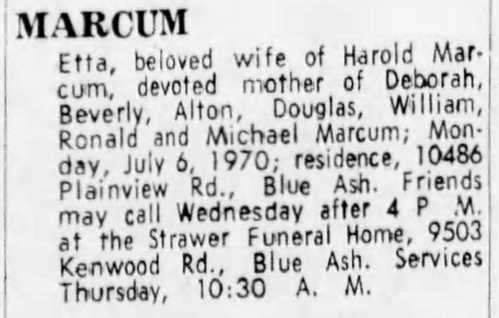

Maggie Marie Mooney McFadden
19 January 1909 – 27 June 1943
Quick Facts
Immediate Family
Parents
- Lee B. Mooney (Find a Grave family link)
- Mother not identified in the memorial/source reviewed
Spouses
- Abe “Mac” McFadden (1905–1964; first wife; his 1964 obituary says Maggie died in 1943)
Children
- Laura Lee McFadden Lawson Johnson (1925–2011)
- Abraham “Abe” McFadden Jr. (1926–1994)
- Etta F. McFadden (1927–1970)
Siblings
- John L. Mooney (1911–1945)
- Violet Mooney Brock (1913–2006)
- Edna Faye Mooney McFadden (1915–2005)
- Rev. James Glenn Mooney (1920–1999)
- Roberta Mooney Sweet (1924–2010)
- Leatha J. “Opal” Mooney (1930–2011)
- Willard L. Mooney (1934–2009) — all linked on Find a Grave; exact relationship set remains derivative
On Family Tree Sites
Person Archive
Life Timeline
19 January 1909 · Birth (Find a Grave memorial)
1925 · Daughter Laura Lee born in Lida, Kentucky (Laura’s obituary)
1926 · Son Abraham “Abe” McFadden Jr. (Find a Grave family link)
1927 · Daughter Etta Fay McFadden born (Find a Grave family link)
27 June 1943 · Death (Find a Grave memorial); buried Nicholson Cemetery, Clay County, Kentucky
Life Story
Maggie Marie Mooney McFadden was born in 1909 and died in 1943, according to her Find a Grave memorial and marker. Her daughter Laura Lee’s obituary says Maggie and Abraham “Abe” McFadden had three children: Laura, Abraham Jr., and Etta Fay. Abe’s 1964 obituary independently names Maggie as his first wife and says she died in 1943. Maggie is buried at Nicholson Cemetery in Clay County, Kentucky.
Family links shown here are attributed to the named records; no other relative profiles were created for this Gen VI couple.
His mother died around 1927, when Homer was sixteen. His father later married Julia Bell Kelly, and that tied the family to the Kellys twice over: Julia's sister Sarah Hazel Kelly, a Georgia girl, became Homer's wife.
Homer and Sarah married on 6 August 1930 in Hamilton, Ohio. Six children followed through the 1930s: Eunice, Eugene, the twins Elmer and Earl, a daughter, and Homer Jr. In 1940 the family of eight lived on Ford Road in Morgan County, in the same house as five years before.
By 1950 they had moved north to Cincinnati, to 517 12th Street, and by 1953 to 519 E. 12th Street. In January 1952 the twins joined the Marines on their seventeenth birthday. Elmer served in California; Earl went to Korea and was wounded on 27 July 1953, the last day of the war; the family was told it was on Pork Chop Hill, but the Marines' last fight was at Boulder City and Hill 111. Homer lost Earl to a car crash in Kentucky in 1959.
Sarah died in Hamilton, Ohio, on 28 February 1987. Homer died in Palm Beach, Florida, on 8 March 1991, at seventy-nine, formerly of College Hill. He was buried beside Sarah at Spring Grove Cemetery in Cincinnati, under their shared stone. He left twenty-four grandchildren and thirty-eight great-grandchildren.
More of Homer's story will be added as family members share their memories.
Photo Gallery


Related family clippings pictured above are scans from the family collection. They are evidence about the Brewster household and descendants, not portraits of Homer except where the caption specifically identifies another person. An online memorial is also available: Find a Grave.
Sources and Evidence
- Find a Grave memorial 225523934: dates, Nicholson Cemetery, linked father Lee B. Mooney, spouse Abe McFadden, children and siblings.
- Find a Grave photo tab: Maggie’s marker photo credited to Douglas Phelps.
- Daughter Laura Lee’s obituary: calls her the oldest of three children born to Abraham “Abe” and Maggie Marie Mooney McFadden; names brother Abe Jr. and sister Etta Fay Marcum.
- Abe McFadden’s 1964 Hamilton Daily News Journal obituary clipping says first wife Maggie died in 1943 and names surviving children Laura, Abe Jr. and Etta Marcum.
- Hamilton Daily News Journal, 9 Dec. 1964, p. 2 (NewspaperArchive OCR transcription of the page) — OCR corroborates the date and headline; use the contributed clipping image in this archive for the article text.
- Daughter Etta F. Marcum’s marker, included as descendant-family evidence.
- Daughter Etta’s 1970 obituary scan names her husband Harold and their children.
Grades: an original record says it · several records point to it · the family's own telling · a lead, not proved.
Research Notes and Open Questions
- The Find a Grave memorial gives Maggie’s birth as 19 January 1909 and death as 27 June 1943, with burial at Nicholson Cemetery, Sidell, Clay County, Kentucky. The dates and grave image are memorial evidence, not civil certificates.
- Laura Lee’s obituary describes herself as the oldest of three children born to Abraham “Abe” and Maggie Marie Mooney McFadden and names brother Abe Jr. and sister Etta Fay Marcum. This independently corroborates the three-child set and the Etta–Maggie parent link.
- Find a Grave lists Lee B. Mooney as Maggie’s father but no mother. Its memorial also links seven siblings; retain those as derivative family-page leads. Do not create profiles for them.
- No portrait located in the sources reviewed; the image is a headstone photograph.
DNA
No DNA matches linked yet.
Family Notes
No Family Notes link has been supplied for this person.
Profile created 25 November 2026 for the Gen VII parentage research on Harold C. Marcum × Etta F. McFadden. Photo first, matching the live Homer/Virgil profile layout.